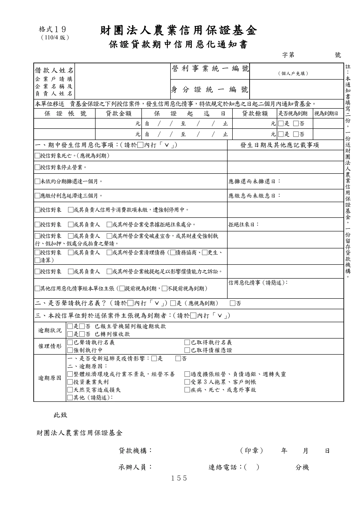

格式 19：保證貸款期中信用惡化通知書
手冊頁：155 PDF頁：167／203

查看PDF文字層
下列文字取自PDF既有文字層，僅供搜尋、複製與無障礙輔助。複雜表格的欄列位置可能失真，正式內容請以原頁預覽或PDF為準。
財團法人 農業信用保證基金
保證貸款期中信用惡化通知書
字第 號
借款人姓 名
企業戶請 填
企業名稱 及
負責人姓 名
營利事業統一編 號
（個人戶免填）
身 分 證 統 一 編 號
本單位移送 貴基金保證之下列授信案件，發生信用惡化情事，特依規定於知悉之日起二個月內通知貴基金。
保證帳 號 貸款金額 保 證 起 迄 日 貸款餘額 是否視為到期 視為到期日
元 自 ∕ ∕ 至 ∕ ∕ 止 元 □是 □否
元 自 ∕ ∕ 至 ∕ ∕ 止 元 □是 □否
一、期中發生信用惡化事項： （請於□內打「ˇ」） 發生日期及其他應記載事項
□授信對象死亡。 （應視為到期）
□授信對象停止營業。
□未依約分期攤還達一個月。 應攤還而未攤還日：
□應繳付利息延滯達三個月。 應繳息而未繳息日：
□授信對象 □或其負責人信用卡消費款項未繳，遭強制停用中。
□授信對象 □或其負責人 □或其所營企業受票據拒絕往來處分。 拒絕往來日：
□授信對象 □或其負責人 □或其所營企業受破產宣告，或其財產受強制執
行、假扣押、假處分或拍賣之聲請。
□授信對象 □或其負責人 □或其所營企業清理債務（□債務協商、□更生、
□清算）
□授信對象 □或其負責人 □或其所營企業被提起足以影響償債能力之訴訟。
□其他信用惡化情事經本單位主張（□提前視為到期，□不提前視為到期）
信用惡化情事（請簡述） ：
二、是否聲請執行名義？（請於□內打「ˇ」）□是（應視為到期） □否
三、本授信單位對於送保案件主張視為到期者：（請於□內打「ˇ」）
逾期狀況 □是□否 已報主管機關列報逾期放款
□是□否 已轉列催收款
催理情形 □已聲請執行名義 □已取得執行名義
□強制執行中 □已取得債權憑證
逾期原因
一、是否受新冠肺炎疫情影響：□是 □否
二、逾期原因：
□整體經濟環境或行業不景氣，經營不善 □過度擴張經營、負債過鉅、週轉失靈
□投資兼業失利 □受第 3人拖累、客戶倒帳
□天然災害造成損失 □疾病、死亡、或意外事故
□其他（請簡述） ：
此致
財團法人農業信用保證基金
貸款機構： （印章） 年 月 日
承辦人員： 連絡電話： （ ） 分機
格式１９
（110/4版）
註
：
本
通
知
書
填
寫
二
份
，
一
份
送
財
團
法
人
農
業
信
用
保
證
基
金
，
一
份
留
存
貸
款
機
構
。